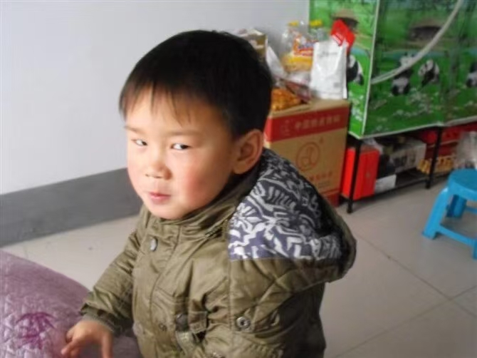

Junior Student, Southeast University
My research interests mainly focus on model editing, diffusion models, and sequential concept erasure.
I am currently working on improving the stability and robustness of sequential editing methods for diffusion models.

I am an undergraduate student at Southeast University. My current work focuses on sequential concept editing for diffusion models, especially how to reduce interference between current edits and historical edits while preserving the model’s original generation capability.
More broadly, I am interested in trustworthy generative models and efficient model adaptation.